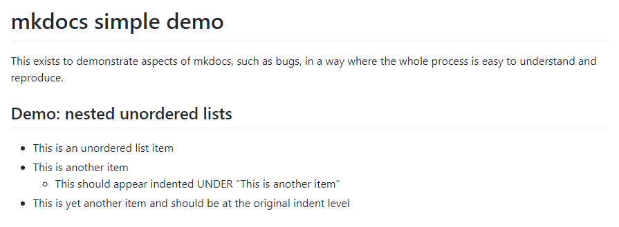
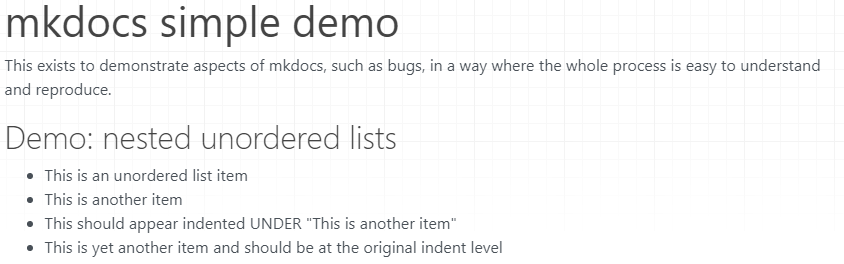
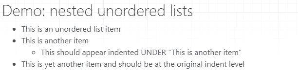

mkdocs simple demo
This exists to demonstrate aspects of mkdocs, such as bugs, in a way where the whole process is easy to understand and reproduce.
Demo: nested unordered lists
- This is an unordered list item
- This is another item
- This should appear indented UNDER "This is another item"
- This is yet another item and should be at the original indent level
GitHub rendering
Shows the third bullet indented:

mkdocs rendering
(Using GitHub version as of June 29 2019)
Shows all unordered list items at the same indent level.

HTML as created:
<h1 id="mkdocs-simple-demo">mkdocs simple demo</h1>
<p>This exists to demonstrate aspects of mkdocs, such as bugs, in a way where the whole process is easy to understand and reproduce.</p>
<h2 id="demo-nested-unordered-lists">Demo: nested unordered lists</h2>
<ul>
<li>This is an unordered list item</li>
<li>This is another item</li>
<li>This should appear indented UNDER "This is another item"</li>
<li>This is yet another item and should be at the original indent level</li>
</ul>
Solution: upstream fix or use custom extension
Lots of good discussion and detail was found in mkdocs issue 545
FIXED via mdx_truly_sane_lists
This was added to mkdocs.yml:
markdown_extensions:
- mdx_truly_sane_lists
And an appropriate pip command was added to the Travis CI "install" section to load the extension.
That results in this GitHub-compatible behavior:

Demo: nested unordered lists with Markdown-spec spacing (4 spaces)
- This is an unordered list item
- This is another item * This should appear indented UNDER "This is another item"
- This is yet another item and should be at the original indent level